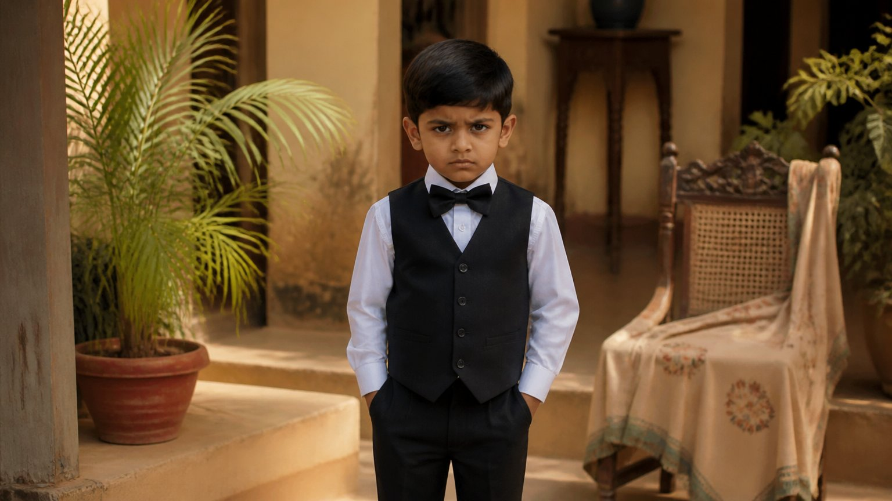

क्या आप भी ऐसे ही पाल रहे हैं?
माता माता ही रहती है। बीस वर्ष पहले जिसने बच्चे पाले, तीस-चालीस वर्ष बाद भी उसका स्वभाव नहीं बदलता।
आज बात है राजसिक (रजोगुण से प्रेरित, यानी इच्छा, महत्वाकांक्षा और "मैं" से चलने वाली) वृत्ति से की गई परवरिश की। और यहां माता का अर्थ केवल मां नहीं, पिता भी इसमें शामिल हैं।
पढ़ते हुए अपने भीतर भी जांचते चलिए।
सिर पर सवार अपेक्षाएं
राजसिक माता बच्चों पर क्या करती है? सारा दबाव। समय-सारणी, दीवार पर "कड़ी मेहनत करो" के चित्र, विद्यालय, यह कक्षा, वह गतिविधि। वह लगातार बच्चे के सिर पर सवार रहती है।
जब वह कहती है, "मेरा बेटा प्रथम आया है", तो वहां "मैं" बोल रहा होता है। अपेक्षाएं बहुत ऊंची होती हैं, उन्हें कोई फल चाहिए। और बच्चा खरा न उतरे, तो वे दुखी हो जाते हैं।
ऐसे माता-पिता मानो बच्चे से कहते हैं कि मैं नहीं कर पाया, बेटा, यह सपना तुझे पूरा करना होगा।
बच्चे की लगन किसी और दिशा में हो, फिर भी जबरदस्ती उसे माता-पिता का अधूरा सपना ढोना होता है।
क्या मैं अपने बच्चे से वह पूरा करवाना चाहता हूं जो मैं स्वयं नहीं कर पाया?
कसाई के पास ले जाया जाता बकरा
ऐसे में बच्चा कितनी रुचि से काम करेगा? उसे वहां अपना मरण दिखता है।
सोचिए, एक बकरे को रस्सी से खींचकर ले जाया जा रहा है और कसाई कह रहा है कि अभी उसकी गर्दन पर चाकू चलेगा। वह कितने उत्साह से जाएगा? उतने ही उत्साह से ये बच्चे माता-पिता की बात सुनते हैं, क्योंकि छोटे होने के कारण वे कुछ कर नहीं पाते।
रजोगुण का अंत दुख
यही बच्चे बड़े होकर घर छोड़ देते हैं। बाहर वही प्रेम ढूंढते-ढूंढते या तो व्यभिचार में पड़ जाते हैं, या गलत जगह विवाह कर लेते हैं, या विद्रोही बनकर भाग जाते हैं। वे बस बड़े होने की प्रतीक्षा करते हैं, ताकि स्वतंत्र हो सकें।
आचार्य जी कहते हैं कि रजोगुण का अंत दुख ही होता है।
मां को जो चाहिए था, वह अधिकतर उसे नहीं मिलता। और मिल भी जाए, तो गलत रूप में।
तुलना की अंतहीन दौड़
बच्चे में सामर्थ्य है या नहीं, यह जाने बिना कक्षाएं लगती हैं: एक, दो, तीन।
और हर समय तुलना: "वह परीक्षा में आगे गया, अगली बार हम आगे निकलेंगे। उसने समारोह में कुछ बोला, अगले में हम कुछ अलग करके दिखाएंगे।"
लगन नहीं, पैसा और नाम
राजसिक माता-पिता बच्चों को भौतिक सफलता और प्रसिद्धि की ओर धकेलते हैं, जिससे बच्चों में तनाव और चिंता पैदा होती है।
"तुझे प्रथम ही आना है।" "अभियंता बन, उसमें सबसे अधिक पैसा है।" "एमबीए कर।" व्यवसाय इसलिए नहीं चुना जाता कि बच्चे की उसमें लगन है, बल्कि इसलिए कि उसमें पैसा, नाम और प्रसिद्धि है।
मेरे बच्चे के लिए मेरा चुनाव उसकी लगन से आता है, या मेरी महत्वाकांक्षा से?
चित्रों के लिए सजा बचपन
राजसिक माताएं चाहती हैं कि बच्चा सामाजिक माध्यमों पर और लोगों के बीच संपूर्ण दिखे। सात्विक (शुद्धता और सहजता से युक्त) मां कहती है, "स्वाभाविक रहने दो, छोटा बच्चा है।" थोड़ा शालीन और प्रस्तुत करने योग्य, इतना ठीक है।
बच्चा बच्चा है, उसे बच्चे जैसा ही रहने देना चाहिए।
पर यहां पूरा श्रृंगार होता है, फिल्मी नायक-नायिकाओं जैसा, क्योंकि चित्र में आना है, समारोह में जाना है। वास्तविक अभिनेत्रियां भी इतना नहीं करतीं। आठ-नौ वर्ष के बच्चों को प्रेम-गीतों पर नचाया जाता है, जिनके शब्दों का अर्थ भी वे नहीं समझते।
सजाने में बुराई नहीं है। प्रश्न यह है कि घर में क्या भरा है। जहां संसार और भौतिकता अधिक है और परमेश्वर कम, वहां बच्चा बचपन से धारावाहिकों के संवाद, नृत्य और वस्त्र ही आत्मसात करता है।

मुख्य बातें
- माता-पिता का स्वभाव समय के साथ नहीं बदलता; इसलिए अपनी वृत्ति को जांचना आवश्यक है।
- राजसिक परवरिश "मैं" से चलती है: ऊंची अपेक्षाएं, दबाव और अधूरे सपनों का बोझ।
- बोझ में दबा बच्चा बड़ा होकर घर छोड़ता है, और प्रेम बाहर गलत जगह ढूंढता है।
- रजोगुण का अंत दुख है; जो चाहा था, वह अधिकतर नहीं मिलता।
- तुलना, अनेक कक्षाएं और पैसे के लिए व्यवसाय का चुनाव बच्चों में तनाव और चिंता लाते हैं।
- बच्चे को बच्चे जैसा रहने दें; घर में परमेश्वर अधिक हो, दिखावा कम।
आगे पढ़ें

हम में से अधिकतर लोग प्रेम करते हैं, पर भीतर ही भीतर हिसाब भी रखते हैं। "मैंने इतना किया, बदले में क्या मिला?" जिस क्षण यह हिसाब शुरू होता है, प्रेम…

वैलेंटाइन का मौसम हो या कोई भी दिन, "प्रेम" शब्द हम सब बहुत सहजता से बोलते हैं। पर क्या हम सचमुच जानते हैं कि प्रेम है क्या?

हम सबने सुना है कि प्रकृति के तीन गुण हैं: सत्व, रज और तम। पर क्या आपने कभी रुककर सोचा है कि "गुण" शब्द का अर्थ वास्तव में क्या है?